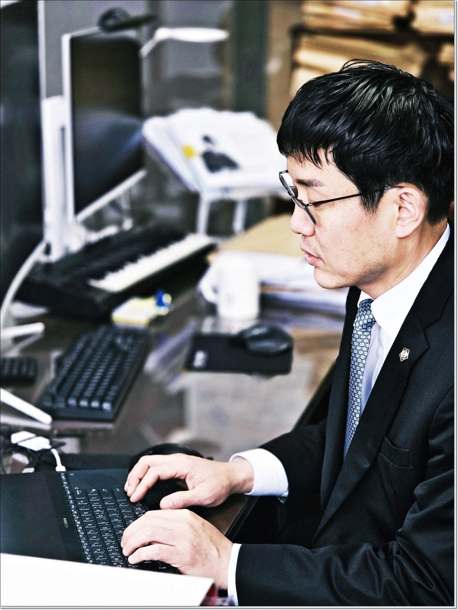

급여소득자
89%
카드·신용대출 9,200만 원 조정
반복적인 돌려막기와 독촉으로 생활이 어려웠던 사례에서 소득과 생활비 자료를 정리해 변제계획을 검토했습니다.
월급은 들어오는데 빚이 줄지 않는다면, 먼저 회생 가능성을 확인해야 합니다. 예상 변제금과 신청 가능성을 간단히 점검한 뒤 상담을 시작합니다. 김기태 대표변호사가 사건별 쟁점을 직접 검토합니다.

접속일 기준 최신 날짜로 자동 정렬됩니다. 개인정보 보호를 위해 이름은 일부만 표시합니다.
상담 전에 자료를 미리 확인하면 변제금과 신청 가능성을 더 빠르게 검토할 수 있습니다.
신용대출, 카드, 보증, 담보채무를 분리해 위험 요소를 확인합니다.
월 소득과 생계비를 기준으로 현실적인 변제계획 방향을 검토합니다.
연체, 지급명령, 통장압류 등 진행 단계에 맞춰 대응합니다.
전주 방문 상담은 물론 전화·카카오톡 비대면 상담도 가능합니다.
개인회생 상담은 채무 문제만 보는 절차가 아닙니다.
직장, 가족, 재산, 소송 위험까지 함께 살펴야 합니다.
민형사 사건 경험을 바탕으로 회생 절차의 쟁점을 세밀하게 검토합니다.
채무액, 재산, 소득, 가족관계를 확인합니다.
신청서와 변제계획안을 제출합니다.
법원 보정명령에 필요한 자료를 보완합니다.
인가된 변제계획에 따라 변제합니다.
상담 전 많이 궁금해하는 개인회생 기준과 압류 대응을 정리했습니다.
전주개인회생은 단순히 빚이 많다는 이유만으로 결정되지 않습니다. 소득, 재산, 부양가족, 최근 대출, 압류 진행 여부를 함께 확인해야 현실적인 변제계획을 세울 수 있습니다.
전주 개인회생 상담에서는 현재 채무가 무담보·담보채무 기준에 맞는지, 매달 반복적인 소득이 있는지, 재산보다 채무가 많은지부터 확인합니다. 특히 전주지방법원 개인회생 절차는 신청서 제출 후 보정명령에 맞춰 자료를 보완해야 하므로 처음부터 채무 발생 경위와 소득자료를 정리하는 것이 중요합니다.
월급에서 생계비를 제외한 실제 변제 가능 금액을 기준으로 검토합니다.
매출, 사업비, 통장 입금내역을 정리해 계속적인 소득 가능성을 확인합니다.
계약서, 입금내역, 거래자료로 반복 소득을 설명할 수 있는지 살펴봅니다.
독촉·지급명령·압류 단계에 따라 신청 시점과 대응 순서를 함께 봅니다.
소득과 채무상태에 따라 연체 전에도 검토가 가능합니다. 최근 대출 내역은 별도 확인이 필요합니다.
개인회생은 원칙적으로 직장 통보 절차가 있는 제도는 아닙니다. 급여압류가 있으면 별도 대응이 필요합니다.
계속적이고 반복적인 소득이 확인된다면 사업자도 개인회생을 검토할 수 있습니다.
재산 형성과 생활관계에 따라 배우자 관련 자료가 요구될 수 있어 초기 상담에서 확인하는 것이 좋습니다.
채무 총액, 담보채무 여부, 월 소득, 부양가족, 재산, 최근 대출, 압류 진행 여부를 확인해 신청 가능성과 예상 변제 방향을 검토합니다.
기본적으로 부채증명서, 소득자료, 재산자료, 가족관계 자료가 필요합니다. 보정명령에 대비해 최근 대출 사용처와 통장 거래내역도 미리 정리하는 것이 좋습니다.
전주 완산구, 덕진구는 물론 전북 지역과 전국 비대면 상담이 가능합니다. 방문이 어렵다면 전화나 카카오톡으로 먼저 상황을 확인할 수 있습니다.
소득이 있어 일부라도 갚을 수 있다면 개인회생을 먼저 검토하고, 변제할 소득이 거의 없다면 개인파산 가능성도 함께 확인합니다.